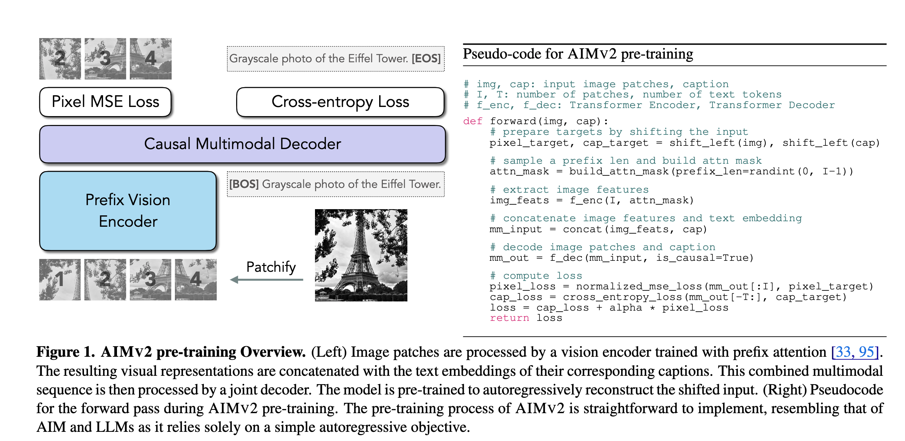
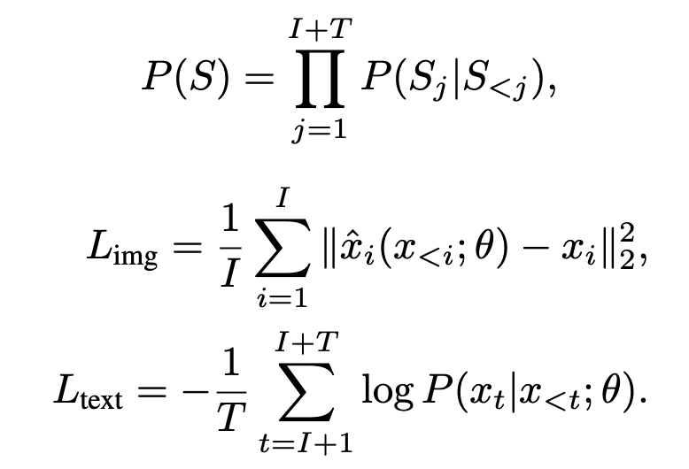
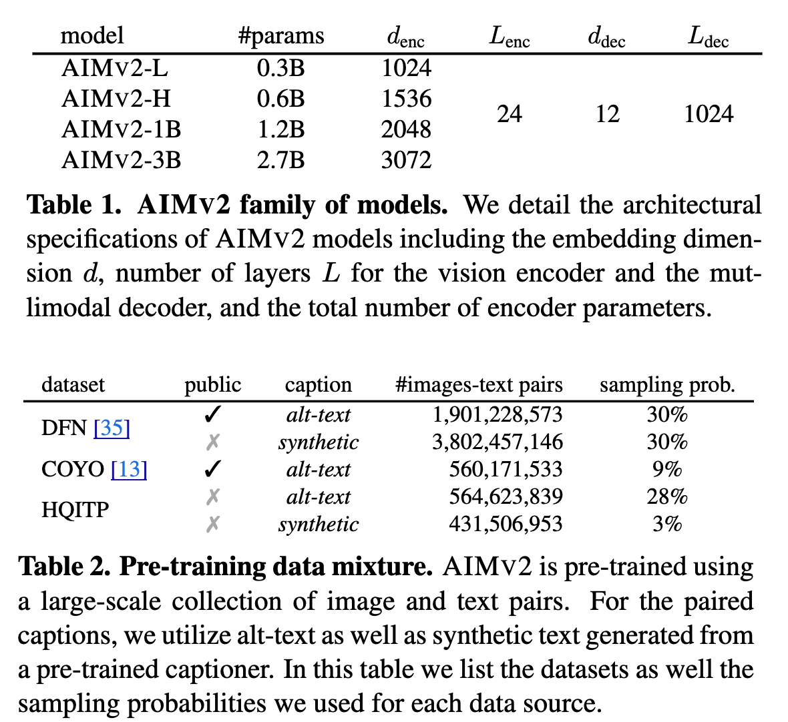
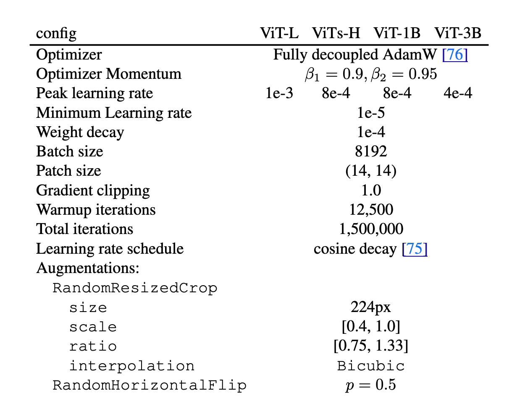
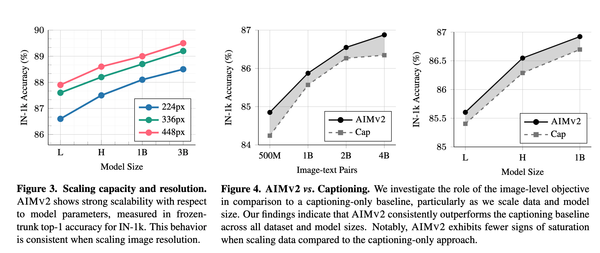
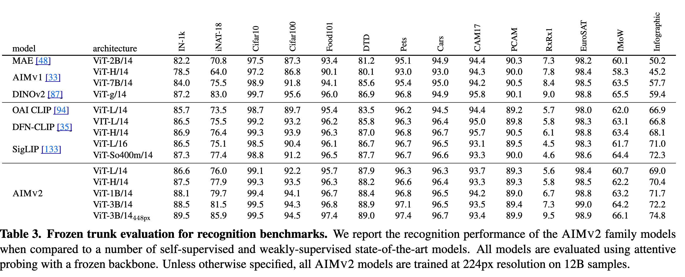
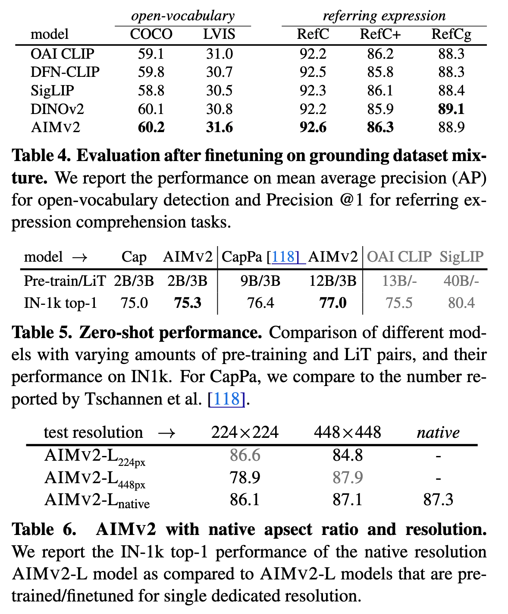
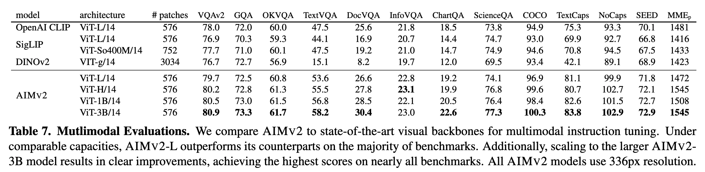

AIMv2
Multimodal Autoregressive Pre-training of Large Vision Encoders
The multimodality space is now evolving in a much better way. The focus has shifted to finding the bottlenecks and fixing things on the fundamental level in multimodality. This paper from Apple introduces AIMv2, and effort is in a similar direction, except that they only do it for the autoregressive models.

AIMv2, a family of open vision models pre-trained to generate image patches and text tokens autoregressively. Unlike the other models in this category, it does not require extremely large batch sizes or specialized inter-batch communication methods.
Pretraining
- Integrates both images and text into a unified sequence.
- An image is split into
Inon-overlapping patches and the text is broken down into subwords. These sequences are concatenated, allowing text tokens to attend to image tokens. The image patches are normalized. - (image, text) is chosen as the desired sequence to enable stronger conditioning on the visual features. NTP is applied to the above sequence regardless of the modality.
- Separate loss functions for the image and text parts are defined as shown below:
 - The overall objective is to minimize \(L= L(text) + α ∗ L(img)\). \(L(text)\) is a standard cross-entropy loss applied to the text domain, whereas \(L(img)\) is an l2 pixel-level regression loss for the image domain. The model predicts the next token for the text and the next patch for the image part.
- Separate linear layers are used for different modalities to map the output of the multimodal decoder to appropriate output dimensions for image patches and vocabulary, respectively.
Architecture
- ViT as the vision encoder. The authors experimented with different-sized encoders ranging from 300M to 3B params. An image resolution of 224px is used.
- Self-attention with the vision encoder utilizes a prefix attention mask. This strategy facilitates the use of bidirectional attention during inference without additional tuning.
- Randomly sample a prefix length M from the uniform distribution as \(M ∼ U\{1, 2, . . . , I − 1\}\) where \(I\) is the number of image patches.
- The pixel loss (l2 loss ) is computed exclusively for non-prefix patches \(\{ x_i \ | \ i > M \}\).
- SwiGLU as the FFN layer, and RMSNorm as the normalization layer both in the vision encoder and the multimodal decoder.
- A single multimodal decoder that decodes the next token for both modalities concurrently in an autoregressive fashion. The decoder receives concatenated sequences of image and text features as input and employs causal attention in the self-attention operations. Image features and raw text tokens are each linearly projected and embedded into d dimensional vectors. The outputs of the decoder are processed through two separate linear heads, one for image tokens and another for text tokens, to predict the next token in each modality, respectively.
- Irrespective of the encoder size, the capacity of the decoder is fixed for all experiments.
Pretraining Data Mixture
- Combination of public and private datasets containing pairs of images and text data.
- Public datasets: DFN-2B and COYO
- Private datasets: High-Quality Image-Text Pairs (HQITP)
- The authors generated and used synthetic captions as well.

Hyperparameters for pretraining
Here is the list of all the hyperparameters used in the pretraining stage. They use SigLIP tokenizer and truncate any text longer than 77 tokens.

I am once again asking people not to use AdamW anymore and to use SOAP at a bare minimum. This will make your training runs more efficient, and you are likely to save enough $
Post-Training
- High-resolution Adaptation
- Pretraining was done with an image resolution of 224px, but many downstream tasks like detection and segmentation benefit from high-resolution images.
- The authors fine-tuned the AIMv2 models. The high-resolution adaptation stage utilizes 2 billion image-text pairs sampled from the same pool as the pretraining stage but without any synthetic captions.
- Zero for weight decay is important for stable training at this stage.
- Native Resolution Fine-tuning
- Seeks to make the model more robust by training it with variable aspect ratios and resolutions.
- For a mini-batch i, they randomly sample area A and resize the images to fit within this area while maintaining their aspect ratios. Then they adjust the mini-batch size B_i such that \(C = A_i B_i\). Here \(C\) is the total number of image patches in the mini-batch.
- The authors chose \(A = 2^n\), where n is sampled from a truncated normal distribution within the range \([−1, 1]\).

Attentive Probing
Aim to assess the quality of AIMv2 models as off-the-shelf backbones for recognition benchmarks. Here, the vision encoder remains frozen, and only an attentive probe classifier is trained on top of the last layerfeatures.
- AIMV2 significantly outperforms generative unsupervised methods such as MAE and AIM, even with much smaller capacity models.
- AIMV2-1B and the smaller AIMV2-H provide competitive performance, outperforming DINOv2 on several benchmarks, including the IN-1k, Food101, DTD, and Cars datasets.

Object Detection and Grounding
- Evaluate the performance of AIMv2 on Open-Vocabulary Detection (OVD) and Referring Expression Comprehension (REC).
- AIMV2 outperforms DINOv2 and other vision-language pre-trained models on all benchmarks but one, showing strong performance on LVIS.

Multimodal Understanding
Evaluate AIMv2 both on instruction tuning and in-context learning.
- 2-layer MLP connector between the vision encoder and the LLM (e.g., Llama 3.0). The parameters of the vision encoder are frozen during this stage.
- The connector and the LLM are jointly trained in this stage, but the learning rate for the connector is scaled by a factor of 8.
- The authors use Llava SFT mixture and Llama-3.0 8B LLM decoder. All models are trained for a single epoch in this stage.
- The smallest model, AIMV2-L, outperforms CLIP, SigLIP, and DINOv2 on most benchmarks, even when the baselines use larger capacities or higher input resolutions.
- For in-context learning, the vision encoder in the MM1 settings is replaced by the AIMv2 vision encoder, and the same evaluation setup is established as in MM1.
